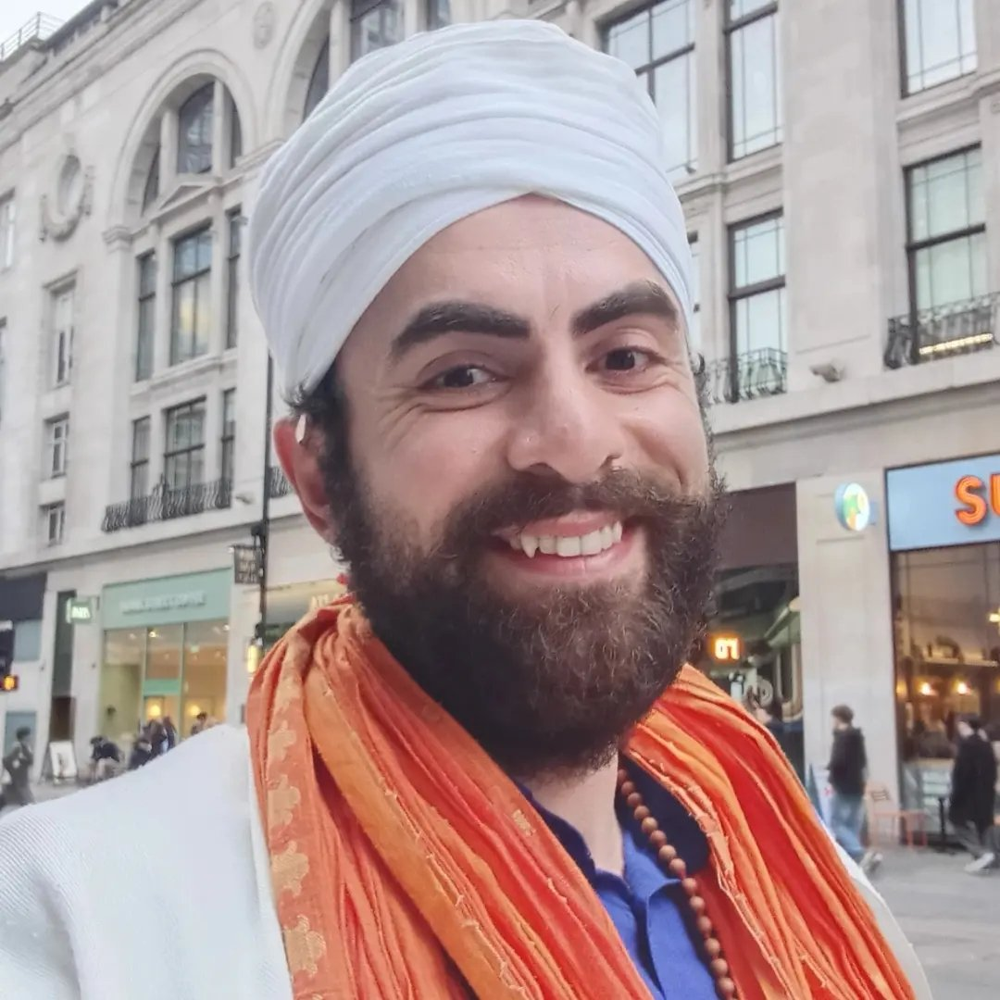

Seva
Selfless service.
Kaan Singh
Poet. Actor. Theatre-maker. Performance artist. Photographer. Founder.
I created Sprinkle of Happiness from a deeply personal place.

It grew from Kaan's experiences of trauma, mental-health challenges, homelessness, survival and recovery, and from Kaan's belief that creativity can help people find their way back to themselves.
Kaan was born in Hackney, London, and later spent several years in Istanbul, studying and working in the city's arts and hospitality sectors.
In 2017 Kaan graduated from Istanbul Bilgi University with a BA in Film and Television, then completed a two-year actor training programme at Istanbul Municipal Theatre.
Back in London, Kaan trained as a drama teacher in secondary schools between 2021 and 2024, and worked as a learning support assistant.
Kaan is now studying for an MA in Creative Writing at Birkbeck College, and is training in holistic integrative creative arts therapy with Devine Creative.
That therapy training is still in progress. Kaan does not practise as a therapist, and Sprinkle of Happiness offers creative and peer support, not therapy or crisis care.
In Istanbul, Kaan worked as a project assistant at Mekan Arti Theatre and as project coordinator for the Biriken Artist Duo from 2013 to 2015. In 2016 Kaan was a technical theatre intern at the Arcola Theatre in London.
In 2024 Kaan staged A Bench of One's Own: A Diary of an Artist, a seven-hour durational performance at the Museum of Modern Art in New York, made without an invitation from the museum. Kaan has since proposed a 100-hour version, performed over ten days, to MoMA and Tate Modern.
Kaan's video works include A Manifesto of Those Whose Home Is the Sea (2014) and More Than Me (2022), both made in Istanbul.
Kaan is now writing, directing and performing in Poisoned by Knowledge, a play about homelessness, with casting planned for December 2026 and rehearsals for 2027.
Pages, photographs, performance and movement as ways of holding a life.
Writing, poetry, photography, performance, movement, spirituality and community became ways for Kaan to process those experiences and imagine a different future.
They did not erase the difficult parts of life, but they helped me hold them with greater understanding and compassion.

Thirty-three poems written between Istanbul and London, about grief, desire, migration and belonging. Kaan writes openly about mental health, including living with bipolar, and about dreams and the subconscious, in a flowing style without full stops.
For anyone who has never quite fitted into one country, language or identity, and for readers drawn to poetry about healing and recovery.
Self-published October 2026 · Paperback (104 pages) and Kindle
A second book is under way: a humorous memoir about teacher training. Kaan is also studying for an MA in Creative Writing at Birkbeck College.
In 2026 Kaan founded Sprinkle of Happiness Holistic Creative Arts Factory CIC, a community interest company, and leads its curriculum. It offers creative workshops, peer support circles and yoga for people who have lived through mental-health crises, with a focus on South Asian, BIPOC and LGBTQ+ communities. Its first full programme, a 13-week winter season, begins on 1 December 2026.
Through Sprinkle of Happiness, Kaan runs Rebel Recovery & Freedom, a peer recovery circle that brings together Sikh philosophy, shadow work and body-based practice. Kaan also leads the London Voices Archive, an oral history project, and hosts the YouTube channel Are You a Survivor?
Kaan created The Invisible City, a survivor-led walking tour of the South Bank and Waterloo, offered through Airbnb Experiences.
Kaan speaks publicly as a lived-experience advocate. That experience, rather than clinical training, is the heart of Sprinkle of Happiness.
Sprinkle of Happiness creates spaces where people can be honest without judgement, express themselves without pressure and remember they are more than the things they have survived.
The project is survivor-led and rooted in creativity, community and Sikh values.
Selfless service.
Wellbeing of all.
Courage and hope through life's challenges.
Kaan has created queer workshops, circles and walks exploring dreams, faith, creativity, secrets and community.
Visit the LGBTQ+ Safe Space The curriculum Kaan developsIt is about finding moments of light within the difficulty.
Even in difficult times, there can still be a sprinkle of happiness.
Kaan Singh
Founder, Sprinkle of Happiness Holistic Creative Arts Factory